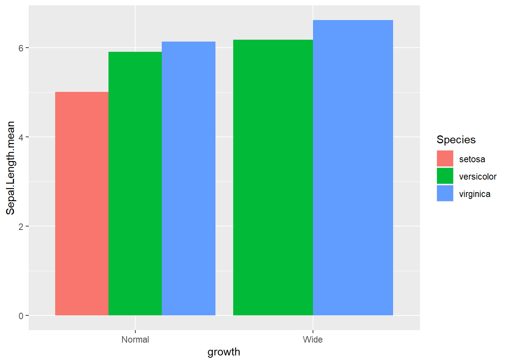
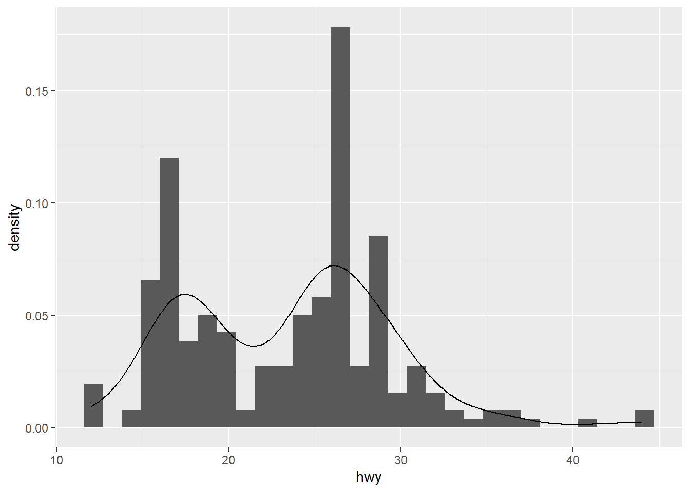

6 Statistical models
6.1 Multiple linear regression
library(car)
library(MASS)
library(psych)6.1.1 Loading and describing data
data(Boston)
data_ori <- Boston
describe(data_ori)| vars | n | mean | sd | median | trimmed | mad | min | max | range | skew | kurtosis | se | |
|---|---|---|---|---|---|---|---|---|---|---|---|---|---|
| crim | 1 | 506 | 3.6135236 | 8.6015451 | 0.25651 | 1.6816300 | 0.3283218 | 0.00632 | 88.9762 | 88.96988 | 5.1922223 | 36.5958159 | 0.3823853 |
| zn | 2 | 506 | 11.3636364 | 23.3224530 | 0.00000 | 5.0800493 | 0.0000000 | 0.00000 | 100.0000 | 100.00000 | 2.2124881 | 3.9523873 | 1.0368095 |
| indus | 3 | 506 | 11.1367787 | 6.8603529 | 9.69000 | 10.9318719 | 9.3700320 | 0.46000 | 27.7400 | 27.28000 | 0.2932747 | -1.2401949 | 0.3049799 |
| chas | 4 | 506 | 0.0691700 | 0.2539940 | 0.00000 | 0.0000000 | 0.0000000 | 0.00000 | 1.0000 | 1.00000 | 3.3857377 | 9.4819703 | 0.0112914 |
| nox | 5 | 506 | 0.5546951 | 0.1158777 | 0.53800 | 0.5450601 | 0.1297275 | 0.38500 | 0.8710 | 0.48600 | 0.7249897 | -0.0874106 | 0.0051514 |
| rm | 6 | 506 | 6.2846344 | 0.7026171 | 6.20850 | 6.2528744 | 0.5122383 | 3.56100 | 8.7800 | 5.21900 | 0.4012223 | 1.8418324 | 0.0312351 |
| age | 7 | 506 | 68.5749012 | 28.1488614 | 77.50000 | 71.1960591 | 28.9848300 | 2.90000 | 100.0000 | 97.10000 | -0.5954162 | -0.9780297 | 1.2513695 |
| dis | 8 | 506 | 3.7950427 | 2.1057101 | 3.20745 | 3.5393786 | 1.9142590 | 1.12960 | 12.1265 | 10.99690 | 1.0057898 | 0.4575916 | 0.0936102 |
| rad | 9 | 506 | 9.5494071 | 8.7072594 | 5.00000 | 8.7339901 | 2.9652000 | 1.00000 | 24.0000 | 23.00000 | 0.9988651 | -0.8789291 | 0.3870849 |
| tax | 10 | 506 | 408.2371542 | 168.5371161 | 330.00000 | 400.0443350 | 108.2298000 | 187.00000 | 711.0000 | 524.00000 | 0.6659891 | -1.1503176 | 7.4923887 |
| ptratio | 11 | 506 | 18.4555336 | 2.1649455 | 19.05000 | 18.6625616 | 1.7049900 | 12.60000 | 22.0000 | 9.40000 | -0.7975743 | -0.3048010 | 0.0962436 |
| black | 12 | 506 | 356.6740316 | 91.2948644 | 391.44000 | 383.1695074 | 8.0949960 | 0.32000 | 396.9000 | 396.58000 | -2.8732597 | 7.1037150 | 4.0585518 |
| lstat | 13 | 506 | 12.6530632 | 7.1410615 | 11.36000 | 11.8990394 | 7.1090670 | 1.73000 | 37.9700 | 36.24000 | 0.9010929 | 0.4628171 | 0.3174589 |
| medv | 14 | 506 | 22.5328063 | 9.1971041 | 21.20000 | 21.5623153 | 5.9304000 | 5.00000 | 50.0000 | 45.00000 | 1.1015373 | 1.4509837 | 0.4088611 |
summary(data_ori)| crim | zn | indus | chas | nox | rm | age | dis | rad | tax | ptratio | black | lstat | medv | |
|---|---|---|---|---|---|---|---|---|---|---|---|---|---|---|
| Min. : 0.00632 | Min. : 0.00 | Min. : 0.46 | Min. :0.00000 | Min. :0.3850 | Min. :3.561 | Min. : 2.90 | Min. : 1.130 | Min. : 1.000 | Min. :187.0 | Min. :12.60 | Min. : 0.32 | Min. : 1.73 | Min. : 5.00 | |
| 1st Qu.: 0.08205 | 1st Qu.: 0.00 | 1st Qu.: 5.19 | 1st Qu.:0.00000 | 1st Qu.:0.4490 | 1st Qu.:5.886 | 1st Qu.: 45.02 | 1st Qu.: 2.100 | 1st Qu.: 4.000 | 1st Qu.:279.0 | 1st Qu.:17.40 | 1st Qu.:375.38 | 1st Qu.: 6.95 | 1st Qu.:17.02 | |
| Median : 0.25651 | Median : 0.00 | Median : 9.69 | Median :0.00000 | Median :0.5380 | Median :6.208 | Median : 77.50 | Median : 3.207 | Median : 5.000 | Median :330.0 | Median :19.05 | Median :391.44 | Median :11.36 | Median :21.20 | |
| Mean : 3.61352 | Mean : 11.36 | Mean :11.14 | Mean :0.06917 | Mean :0.5547 | Mean :6.285 | Mean : 68.57 | Mean : 3.795 | Mean : 9.549 | Mean :408.2 | Mean :18.46 | Mean :356.67 | Mean :12.65 | Mean :22.53 | |
| 3rd Qu.: 3.67708 | 3rd Qu.: 12.50 | 3rd Qu.:18.10 | 3rd Qu.:0.00000 | 3rd Qu.:0.6240 | 3rd Qu.:6.623 | 3rd Qu.: 94.08 | 3rd Qu.: 5.188 | 3rd Qu.:24.000 | 3rd Qu.:666.0 | 3rd Qu.:20.20 | 3rd Qu.:396.23 | 3rd Qu.:16.95 | 3rd Qu.:25.00 | |
| Max. :88.97620 | Max. :100.00 | Max. :27.74 | Max. :1.00000 | Max. :0.8710 | Max. :8.780 | Max. :100.00 | Max. :12.127 | Max. :24.000 | Max. :711.0 | Max. :22.00 | Max. :396.90 | Max. :37.97 | Max. :50.00 |
6.1.2 Create table 1
library(boot)
library(table1)
table1(~ . , data=data_ori)| Overall (N=506) |
|
|---|---|
| crim | |
| Mean (SD) | 3.61 (8.60) |
| Median [Min, Max] | 0.257 [0.00632, 89.0] |
| zn | |
| Mean (SD) | 11.4 (23.3) |
| Median [Min, Max] | 0 [0, 100] |
| indus | |
| Mean (SD) | 11.1 (6.86) |
| Median [Min, Max] | 9.69 [0.460, 27.7] |
| chas | |
| Mean (SD) | 0.0692 (0.254) |
| Median [Min, Max] | 0 [0, 1.00] |
| nox | |
| Mean (SD) | 0.555 (0.116) |
| Median [Min, Max] | 0.538 [0.385, 0.871] |
| rm | |
| Mean (SD) | 6.28 (0.703) |
| Median [Min, Max] | 6.21 [3.56, 8.78] |
| age | |
| Mean (SD) | 68.6 (28.1) |
| Median [Min, Max] | 77.5 [2.90, 100] |
| dis | |
| Mean (SD) | 3.80 (2.11) |
| Median [Min, Max] | 3.21 [1.13, 12.1] |
| rad | |
| Mean (SD) | 9.55 (8.71) |
| Median [Min, Max] | 5.00 [1.00, 24.0] |
| tax | |
| Mean (SD) | 408 (169) |
| Median [Min, Max] | 330 [187, 711] |
| ptratio | |
| Mean (SD) | 18.5 (2.16) |
| Median [Min, Max] | 19.1 [12.6, 22.0] |
| black | |
| Mean (SD) | 357 (91.3) |
| Median [Min, Max] | 391 [0.320, 397] |
| lstat | |
| Mean (SD) | 12.7 (7.14) |
| Median [Min, Max] | 11.4 [1.73, 38.0] |
| medv | |
| Mean (SD) | 22.5 (9.20) |
| Median [Min, Max] | 21.2 [5.00, 50.0] |
6.1.3 Missingness checking
library(mice)
md.pattern(data_ori)## /\ /\
## { `---' }
## { O O }
## ==> V <== No need for mice. This data set is completely observed.
## \ \|/ /
## `-----'
| crim | zn | indus | chas | nox | rm | age | dis | rad | tax | ptratio | black | lstat | medv | ||
|---|---|---|---|---|---|---|---|---|---|---|---|---|---|---|---|
| 506 | 1 | 1 | 1 | 1 | 1 | 1 | 1 | 1 | 1 | 1 | 1 | 1 | 1 | 1 | 0 |
| 0 | 0 | 0 | 0 | 0 | 0 | 0 | 0 | 0 | 0 | 0 | 0 | 0 | 0 | 0 |
6.1.4 Exploratory data analysis
-correlation matrix
library(psych)
pairs.panels(data_ori)
- histogram
library(DataExplorer)
plot_histogram(data_ori)
6.1.5 Transformations
- transformation (based on the following rule) then histogram
library(tidyverse)
data_trans = data_ori %>% mutate(age= sqrt(max(age)+1-age),
black= log10(max(black)+1-black),
crim= log10(crim),
dis= sqrt(dis) )
plot_histogram(data_trans)
# pairs.panels(data2)! How to transform data for normality.
{kind=link}
- check linearity between
y and x
attach(data_trans)
plot(medv, rm)
plot(medv,lstat)plot(medv,age)plot(medv, black)plot(medv,crim)6.1.6 Data imputation and normalization
6.1.6.1 For original”data”
- compiling knnimpute model (see machine learning section)
library(caret)
# Create the knn imputation model on the training data
y=data_ori$medv
preProcess_missingdata_model <- preProcess(data_ori , method='knnImpute')
preProcess_missingdata_model## Created from 506 samples and 14 variables
##
## Pre-processing:
## - centered (14)
## - ignored (0)
## - 5 nearest neighbor imputation (14)
## - scaled (14)- check missingness
# Use the imputation model to predict the values of missing data points
library(RANN) # required for knnInpute
data_ori <- predict(preProcess_missingdata_model, newdata = data_ori )
anyNA(data_ori )## [1] FALSEdata_ori$medv <- y6.1.6.2 For transformed “data2”
- compiling knnimpute model (see machine learning section)
library(caret)
y2=data_trans$medv
# Create the knn imputation model on the training data
preProcess_missingdata_model2 <- preProcess(data_trans , method='knnImpute')
preProcess_missingdata_model2## Created from 506 samples and 14 variables
##
## Pre-processing:
## - centered (14)
## - ignored (0)
## - 5 nearest neighbor imputation (14)
## - scaled (14)- check missingness
# Use the imputation model to predict the values of missing data points
library(RANN) # required for knnInpute
data_trans <- predict(preProcess_missingdata_model2, newdata = data_trans )
anyNA(data_trans )## [1] FALSEdata_trans$medv <- y26.1.8 Spliting data into trainning data and test data
- by using
caretpackage (test data for external validation)
# Create the training and test datasets
set.seed(123)
# for original data
# Step 1: Get row numbers for the training data
trainRowNumbers <- createDataPartition(data_ori$medv, p=0.8, list=FALSE)
# Step 2: Create the training dataset
data <- data_ori[trainRowNumbers,]
# Step 3: Create the test dataset
testdata <- data_ori[-trainRowNumbers,]
# for transformed data
# Step 1: Get row numbers for the training data
trainRowNumbers2 <- createDataPartition(data_trans$medv, p=0.8, list=FALSE)
# Step 2: Create the training dataset
data2 <- data_trans[trainRowNumbers2,]
# Step 3: Create the test dataset
testdata2 <- data_trans[-trainRowNumbers2,]6.1.9 Step regression
model_o = lm( medv ~. , data=data2)
step(model_o,direction = "both")## Start: AIC=1281.15
## medv ~ crim + zn + indus + chas + nox + rm + age + dis + rad +
## tax + ptratio + black + lstat
##
## Df Sum of Sq RSS AIC
## - black 1 0.17 8847.0 1279.2
## - age 1 7.07 8853.9 1279.5
## - crim 1 14.36 8861.2 1279.8
## - indus 1 24.08 8870.9 1280.3
## <none> 8846.8 1281.2
## - rad 1 103.22 8950.0 1283.9
## - tax 1 156.33 9003.1 1286.3
## - zn 1 198.34 9045.2 1288.2
## - chas 1 251.31 9098.1 1290.5
## - nox 1 692.00 9538.8 1309.8
## - ptratio 1 840.04 9686.9 1316.1
## - rm 1 965.90 9812.7 1321.3
## - dis 1 1349.41 10196.2 1336.9
## - lstat 1 2766.14 11613.0 1389.9
##
## Step: AIC=1279.16
## medv ~ crim + zn + indus + chas + nox + rm + age + dis + rad +
## tax + ptratio + lstat
##
## Df Sum of Sq RSS AIC
## - age 1 7.15 8854.1 1277.5
## - crim 1 14.32 8861.3 1277.8
## - indus 1 24.52 8871.5 1278.3
## <none> 8847.0 1279.2
## + black 1 0.17 8846.8 1281.2
## - rad 1 103.72 8950.7 1281.9
## - tax 1 157.40 9004.4 1284.3
## - zn 1 198.20 9045.2 1286.2
## - chas 1 251.25 9098.2 1288.6
## - nox 1 695.37 9542.4 1308.0
## - ptratio 1 850.76 9697.7 1314.5
## - rm 1 966.99 9814.0 1319.4
## - dis 1 1375.04 10222.0 1336.0
## - lstat 1 2770.28 11617.3 1388.0
##
## Step: AIC=1277.49
## medv ~ crim + zn + indus + chas + nox + rm + dis + rad + tax +
## ptratio + lstat
##
## Df Sum of Sq RSS AIC
## - crim 1 18.36 8872.5 1276.3
## - indus 1 25.56 8879.7 1276.7
## <none> 8854.1 1277.5
## + age 1 7.15 8847.0 1279.2
## + black 1 0.26 8853.9 1279.5
## - rad 1 97.20 8951.3 1279.9
## - tax 1 152.93 9007.1 1282.5
## - zn 1 196.76 9050.9 1284.4
## - chas 1 255.17 9109.3 1287.0
## - nox 1 694.68 9548.8 1306.2
## - ptratio 1 843.66 9697.8 1312.5
## - rm 1 1023.40 9877.5 1320.0
## - dis 1 1633.60 10487.7 1344.4
## - lstat 1 2978.57 11832.7 1393.5
##
## Step: AIC=1276.33
## medv ~ zn + indus + chas + nox + rm + dis + rad + tax + ptratio +
## lstat
##
## Df Sum of Sq RSS AIC
## - indus 1 21.92 8894.4 1275.3
## <none> 8872.5 1276.3
## + crim 1 18.36 8854.1 1277.5
## + age 1 11.19 8861.3 1277.8
## + black 1 0.13 8872.4 1278.3
## - tax 1 158.39 9030.9 1281.5
## - zn 1 180.19 9052.7 1282.5
## - rad 1 212.19 9084.7 1284.0
## - chas 1 249.50 9122.0 1285.6
## - nox 1 689.33 9561.8 1304.8
## - ptratio 1 873.78 9746.3 1312.6
## - rm 1 1025.43 9897.9 1318.8
## - dis 1 1701.37 10573.9 1345.7
## - lstat 1 2996.77 11869.3 1392.8
##
## Step: AIC=1275.34
## medv ~ zn + chas + nox + rm + dis + rad + tax + ptratio + lstat
##
## Df Sum of Sq RSS AIC
## <none> 8894.4 1275.3
## + indus 1 21.92 8872.5 1276.3
## + crim 1 14.72 8879.7 1276.7
## + age 1 11.89 8882.5 1276.8
## + black 1 0.00 8894.4 1277.3
## - zn 1 206.52 9100.9 1282.7
## - chas 1 237.50 9131.9 1284.1
## - tax 1 281.42 9175.8 1286.0
## - rad 1 293.27 9187.7 1286.5
## - nox 1 800.54 9695.0 1308.4
## - ptratio 1 929.05 9823.5 1313.8
## - rm 1 1083.34 9977.8 1320.1
## - dis 1 1706.94 10601.4 1344.8
## - lstat 1 3024.07 11918.5 1392.5##
## Call:
## lm(formula = medv ~ zn + chas + nox + rm + dis + rad + tax +
## ptratio + lstat, data = data2)
##
## Coefficients:
## (Intercept) zn chas nox rm dis
## 22.509 1.016 0.759 -2.764 2.176 -3.970
## rad tax ptratio lstat
## 2.119 -2.317 -1.991 -4.224# summary(step(model_o,direction = "both"))6.1.10 Create a model after selecting variables
model_trasf <- lm(formula = medv ~ zn + chas + nox + rm + dis + rad + tax +
ptratio + lstat, data = data2)
summary(model_trasf)##
## Call:
## lm(formula = medv ~ zn + chas + nox + rm + dis + rad + tax +
## ptratio + lstat, data = data2)
##
## Residuals:
## Min 1Q Median 3Q Max
## -13.2923 -2.4690 -0.5086 1.6269 24.5813
##
## Coefficients:
## Estimate Std. Error t value Pr(>|t|)
## (Intercept) 22.5090 0.2352 95.718 < 2e-16 ***
## zn 1.0161 0.3347 3.036 0.002554 **
## chas 0.7590 0.2331 3.256 0.001227 **
## nox -2.7640 0.4624 -5.978 5.05e-09 ***
## rm 2.1760 0.3129 6.954 1.47e-11 ***
## dis -3.9697 0.4548 -8.729 < 2e-16 ***
## rad 2.1194 0.5858 3.618 0.000335 ***
## tax -2.3171 0.6538 -3.544 0.000441 ***
## ptratio -1.9909 0.3092 -6.440 3.47e-10 ***
## lstat -4.2244 0.3636 -11.618 < 2e-16 ***
## ---
## Signif. codes: 0 '***' 0.001 '**' 0.01 '*' 0.05 '.' 0.1 ' ' 1
##
## Residual standard error: 4.733 on 397 degrees of freedom
## Multiple R-squared: 0.7187, Adjusted R-squared: 0.7123
## F-statistic: 112.7 on 9 and 397 DF, p-value: < 2.2e-166.1.11 Multicollinearity checking
vif(model_trasf)## zn chas nox rm dis rad tax ptratio
## 2.024269 1.044796 4.074241 1.721080 3.759267 6.008751 7.469414 1.743359
## lstat
## 2.3721256.1.12 Plot model to check assumptions
plot(model_trasf)


- histogram of residuals
resid<- model_trasf$residuals
hist(resid)
- F test of model
anova(model_trasf)| Df | Sum Sq | Mean Sq | F value | Pr(>F) | |
|---|---|---|---|---|---|
| zn | 1 | 4019.0308 | 4019.03076 | 179.38831 | 0e+00 |
| chas | 1 | 1011.5766 | 1011.57663 | 45.15144 | 0e+00 |
| nox | 1 | 2785.8086 | 2785.80857 | 124.34378 | 0e+00 |
| rm | 1 | 8487.0727 | 8487.07268 | 378.81810 | 0e+00 |
| dis | 1 | 951.7774 | 951.77743 | 42.48232 | 0e+00 |
| rad | 1 | 558.8550 | 558.85503 | 24.94434 | 9e-07 |
| tax | 1 | 767.8718 | 767.87176 | 34.27374 | 0e+00 |
| ptratio | 1 | 1119.3945 | 1119.39453 | 49.96386 | 0e+00 |
| lstat | 1 | 3024.0665 | 3024.06652 | 134.97836 | 0e+00 |
| Residuals | 397 | 8894.4215 | 22.40408 | NA | NA |
- coefficients
coef(summary(model_trasf))| Estimate | Std. Error | t value | Pr(>|t|) | |
|---|---|---|---|---|
| (Intercept) | 22.5089571 | 0.2351584 | 95.718273 | 0.0000000 |
| zn | 1.0160975 | 0.3346703 | 3.036115 | 0.0025545 |
| chas | 0.7589909 | 0.2331142 | 3.255876 | 0.0012275 |
| nox | -2.7639762 | 0.4623875 | -5.977619 | 0.0000000 |
| rm | 2.1760130 | 0.3129267 | 6.953747 | 0.0000000 |
| dis | -3.9697228 | 0.4547944 | -8.728609 | 0.0000000 |
| rad | 2.1193795 | 0.5857829 | 3.618029 | 0.0003352 |
| tax | -2.3171470 | 0.6537962 | -3.544143 | 0.0004408 |
| ptratio | -1.9908948 | 0.3091666 | -6.439552 | 0.0000000 |
| lstat | -4.2244121 | 0.3636086 | -11.618019 | 0.0000000 |
- confidence interval
confint(model_trasf)| 2.5 % | 97.5 % | |
|---|---|---|
| (Intercept) | 22.0466457 | 22.971269 |
| zn | 0.3581500 | 1.674045 |
| chas | 0.3006983 | 1.217283 |
| nox | -3.6730103 | -1.854942 |
| rm | 1.5608125 | 2.791214 |
| dis | -4.8638292 | -3.075616 |
| rad | 0.9677553 | 3.271004 |
| tax | -3.6024824 | -1.031812 |
| ptratio | -2.5987032 | -1.383086 |
| lstat | -4.9392512 | -3.509573 |
6.1.13 Add polynomial of quadratic term
rm and lstat
model_trasf_poly <- lm(formula = medv ~ zn + chas + nox + I(rm^2) + dis + rad + tax +
ptratio + I(lstat^2), data = data2)
summary(model_trasf_poly)##
## Call:
## lm(formula = medv ~ zn + chas + nox + I(rm^2) + dis + rad + tax +
## ptratio + I(lstat^2), data = data2)
##
## Residuals:
## Min 1Q Median 3Q Max
## -19.0736 -3.4029 -0.6212 2.8340 29.4942
##
## Coefficients:
## Estimate Std. Error t value Pr(>|t|)
## (Intercept) 22.2859 0.3526 63.212 < 2e-16 ***
## zn 1.5524 0.4096 3.790 0.000174 ***
## chas 0.9570 0.2834 3.377 0.000805 ***
## nox -4.4962 0.5455 -8.242 2.50e-15 ***
## I(rm^2) 1.5313 0.1589 9.637 < 2e-16 ***
## dis -3.3186 0.5644 -5.880 8.69e-09 ***
## rad 3.0529 0.7024 4.346 1.76e-05 ***
## tax -3.6647 0.7861 -4.662 4.28e-06 ***
## ptratio -2.6800 0.3706 -7.232 2.47e-12 ***
## I(lstat^2) -1.3170 0.1918 -6.865 2.56e-11 ***
## ---
## Signif. codes: 0 '***' 0.001 '**' 0.01 '*' 0.05 '.' 0.1 ' ' 1
##
## Residual standard error: 5.763 on 397 degrees of freedom
## Multiple R-squared: 0.583, Adjusted R-squared: 0.5735
## F-statistic: 61.67 on 9 and 397 DF, p-value: < 2.2e-166.1.14 Add interaction terms
rm and lstat- R2 >0.7 indicates a good fit of the model
model_trasf_term <- lm(formula = medv ~ zn + chas + nox + (rm* lstat) + dis + rad + tax +
ptratio , data = data2)
summary(model_trasf_term)##
## Call:
## lm(formula = medv ~ zn + chas + nox + (rm * lstat) + dis + rad +
## tax + ptratio, data = data2)
##
## Residuals:
## Min 1Q Median 3Q Max
## -19.4595 -2.3458 -0.2389 1.7950 26.6992
##
## Coefficients:
## Estimate Std. Error t value Pr(>|t|)
## (Intercept) 21.4297 0.2379 90.060 < 2e-16 ***
## zn 0.5221 0.3046 1.714 0.087296 .
## chas 0.6538 0.2095 3.120 0.001941 **
## nox -2.0295 0.4218 -4.812 2.13e-06 ***
## rm 1.6459 0.2860 5.754 1.75e-08 ***
## lstat -5.8715 0.3669 -16.002 < 2e-16 ***
## dis -3.1810 0.4161 -7.645 1.60e-13 ***
## rad 1.9251 0.5262 3.658 0.000288 ***
## tax -1.9187 0.5883 -3.261 0.001205 **
## ptratio -1.5554 0.2811 -5.534 5.70e-08 ***
## rm:lstat -1.8202 0.1852 -9.830 < 2e-16 ***
## ---
## Signif. codes: 0 '***' 0.001 '**' 0.01 '*' 0.05 '.' 0.1 ' ' 1
##
## Residual standard error: 4.249 on 396 degrees of freedom
## Multiple R-squared: 0.7739, Adjusted R-squared: 0.7682
## F-statistic: 135.5 on 10 and 396 DF, p-value: < 2.2e-16plot(model_trasf_term)


6.1.15 Robust regression
robust_model_term <- rlm(medv ~ zn + chas + nox + (rm* lstat) + dis + rad + tax +
ptratio , data = data2)
summary(robust_model_term)##
## Call: rlm(formula = medv ~ zn + chas + nox + (rm * lstat) + dis + rad +
## tax + ptratio, data = data2)
## Residuals:
## Min 1Q Median 3Q Max
## -20.90999 -1.74873 -0.09845 1.92931 33.87244
##
## Coefficients:
## Value Std. Error t value
## (Intercept) 20.9624 0.1656 126.5763
## zn 0.1998 0.2120 0.9424
## chas 0.5198 0.1458 3.5643
## nox -1.3458 0.2935 -4.5846
## rm 2.8773 0.1991 14.4524
## lstat -4.5706 0.2554 -17.8979
## dis -1.9208 0.2896 -6.6326
## rad 0.9005 0.3663 2.4586
## tax -1.7199 0.4095 -4.2004
## ptratio -1.2451 0.1956 -6.3652
## rm:lstat -1.9899 0.1289 -15.4398
##
## Residual standard error: 2.698 on 396 degrees of freedom6.1.16 Create a model before transforming data
model_trasf_orig <- lm(formula = medv ~ zn + chas + nox + rm + dis + rad + tax +
ptratio + lstat, data = data)
summary(model_trasf_orig)##
## Call:
## lm(formula = medv ~ zn + chas + nox + rm + dis + rad + tax +
## ptratio + lstat, data = data)
##
## Residuals:
## Min 1Q Median 3Q Max
## -14.219 -2.729 -0.463 1.920 25.992
##
## Coefficients:
## Estimate Std. Error t value Pr(>|t|)
## (Intercept) 22.5094 0.2430 92.619 < 2e-16 ***
## zn 0.8232 0.3754 2.193 0.028904 *
## chas 0.6582 0.2412 2.728 0.006652 **
## nox -1.9351 0.4727 -4.093 5.15e-05 ***
## rm 2.3985 0.3128 7.668 1.36e-13 ***
## dis -2.9289 0.4565 -6.416 3.99e-10 ***
## rad 2.2109 0.6348 3.483 0.000551 ***
## tax -2.1880 0.6896 -3.173 0.001627 **
## ptratio -2.0274 0.3254 -6.230 1.19e-09 ***
## lstat -4.3534 0.3844 -11.325 < 2e-16 ***
## ---
## Signif. codes: 0 '***' 0.001 '**' 0.01 '*' 0.05 '.' 0.1 ' ' 1
##
## Residual standard error: 4.895 on 397 degrees of freedom
## Multiple R-squared: 0.7212, Adjusted R-squared: 0.7149
## F-statistic: 114.1 on 9 and 397 DF, p-value: < 2.2e-16- non nest models comparisons
AIC(model_trasf,model_trasf_orig)| df | AIC | |
|---|---|---|
| model_trasf | 11 | 2432.353 |
| model_trasf_orig | 11 | 2459.780 |
6.1.17 K-fold cross validation
- to make sure which model is better
# install.packages("DAAG")
library(DAAG)
set.seed(123)
model_trasf_term_cv <- glm( medv ~ zn + chas + nox + (rm* lstat) + dis + rad + tax +
ptratio , data = data2)
cv.err <- cv.glm(data2, model_trasf_term_cv, K = 10)$delta
cv.err ## [1] 19.24588 19.154006.1.18 Nonnest models comparisons
AIC(model_trasf_term,model_trasf,model_trasf_orig,model_trasf_poly)| df | AIC | |
|---|---|---|
| model_trasf_term | 12 | 2345.492 |
| model_trasf | 11 | 2432.353 |
| model_trasf_orig | 11 | 2459.780 |
| model_trasf_poly | 11 | 2592.584 |
# interaction, transformation, original, polynomial by order (`data` has been normalized but not `data2`)- plot the final model and check the model assumption
posterior predictive check, linearity, homogeneity of variance, influential points, colinearity, and normality of residuals
# install.packages("performance")
library(performance)
check_model(model_trasf_term)
6.1.19 Create forest plot for coefficients
library(sjPlot)
plot_model(model_trasf_term, show.values = TRUE, value.offset = 0.4) 
6.1.20 Relative Importance
- provides measures of relative importance
library(relaimpo)
# calc.relimp(fit,type=c("lmg","last","first","pratt"),
# rela=TRUE)
# Bootstrap Measures of Relative Importance (1000 samples)
boot <- boot.relimp(model_trasf_term, b = 10, type =c("lmg" ), rank = TRUE,
# type =c("lmg","last","first","pratt")
diff = TRUE, rela = TRUE)
booteval.relimp(boot) # print result## Response variable: medv
## Total response variance: 77.88147
## Analysis based on 407 observations
##
## 10 Regressors:
## zn chas nox rm lstat dis rad tax ptratio rm:lstat
## Proportion of variance explained by model: 77.39%
## Metrics are normalized to sum to 100% (rela=TRUE).
##
## Relative importance metrics:
##
## lmg
## zn 0.03220843
## chas 0.01925573
## nox 0.05753222
## rm 0.24841214
## lstat 0.32582422
## dis 0.04647715
## rad 0.03216196
## tax 0.05940953
## ptratio 0.09003437
## rm:lstat 0.08868423
##
## Average coefficients for different model sizes:
##
## 1X 2Xs 3Xs 4Xs 5Xs 6Xs
## zn 3.1505046 2.1309586 1.5419108 1.1885764 0.9622432 0.8066737
## chas 1.4317561 1.3828980 1.2922217 1.1827563 1.0710746 0.9666952
## nox -3.6683140 -2.8590532 -2.3987148 -2.1635246 -2.0628637 -2.0336275
## rm 5.8715576 5.1812470 4.6686609 4.2214027 3.7902531 3.3584729
## lstat -6.3961998 -6.2413211 -6.1543204 -6.0962610 -6.0505503 -6.0111059
## dis 2.3495853 0.6106749 -0.5986185 -1.4554886 -2.0655023 -2.4944977
## rad -3.2090101 -1.5469225 -0.4505596 0.2850626 0.7884232 1.1408255
## tax -4.1727995 -3.6061521 -3.1776467 -2.8413999 -2.5683300 -2.3434564
## ptratio -4.2048171 -3.4233285 -2.9476391 -2.6199136 -2.3633992 -2.1469790
## rm:lstat -0.7386853 -1.0072327 -1.1975350 -1.3430505 -1.4610987 -1.5602846
## 7Xs 8Xs 9Xs 10Xs
## zn 0.6942682 0.6122971 0.5558327 0.5221292
## chas 0.8734919 0.7916003 0.7191770 0.6537613
## nox -2.0351844 -2.0434312 -2.0444974 -2.0294702
## rm 2.9235837 2.4886854 2.0599352 1.6458985
## lstat -5.9756419 -5.9424093 -5.9088868 -5.8714971
## dis -2.7882468 -2.9825750 -3.1064663 -3.1809633
## rad 1.3969994 1.5963587 1.7666711 1.9250667
## tax -2.1625306 -2.0281734 -1.9455332 -1.9186629
## ptratio -1.9610124 -1.8027959 -1.6694147 -1.5553973
## rm:lstat -1.6447082 -1.7160362 -1.7745576 -1.8202278
##
##
## Confidence interval information ( 10 bootstrap replicates, bty= perc ):
## Relative Contributions with confidence intervals:
##
## Lower Upper
## percentage 0.95 0.95 0.95
## zn.lmg 0.0322 _______HIJ 0.0202 0.0358
## chas.lmg 0.0193 _____FGHIJ 0.0016 0.0512
## nox.lmg 0.0575 ____EFG___ 0.0427 0.0707
## rm.lmg 0.2484 AB________ 0.1929 0.3313
## lstat.lmg 0.3258 AB________ 0.2627 0.3840
## dis.lmg 0.0465 _____FGHIJ 0.0287 0.0545
## rad.lmg 0.0322 ______GHIJ 0.0213 0.0453
## tax.lmg 0.0594 ___DEFG___ 0.0476 0.0774
## ptratio.lmg 0.0900 __CD______ 0.0712 0.1166
## rm:lstat.lmg 0.0887 __CDEF____ 0.0614 0.1114
##
## Letters indicate the ranks covered by bootstrap CIs.
## (Rank bootstrap confidence intervals always obtained by percentile method)
## CAUTION: Bootstrap confidence intervals can be somewhat liberal.
##
##
## Differences between Relative Contributions:
##
## Lower Upper
## difference 0.95 0.95 0.95
## zn-chas.lmg 0.0130 -0.0198 0.0270
## zn-nox.lmg -0.0253 * -0.0505 -0.0125
## zn-rm.lmg -0.2162 * -0.3057 -0.1571
## zn-lstat.lmg -0.2936 * -0.3481 -0.2295
## zn-dis.lmg -0.0143 -0.0246 0.0027
## zn-rad.lmg 0.0000 -0.0214 0.0087
## zn-tax.lmg -0.0272 * -0.0520 -0.0173
## zn-ptratio.lmg -0.0578 * -0.0880 -0.0378
## zn-rm:lstat.lmg -0.0565 * -0.0828 -0.0315
## chas-nox.lmg -0.0383 * -0.0584 -0.0019
## chas-rm.lmg -0.2292 * -0.3173 -0.1765
## chas-lstat.lmg -0.3066 * -0.3675 -0.2115
## chas-dis.lmg -0.0272 -0.0377 0.0155
## chas-rad.lmg -0.0129 -0.0437 0.0215
## chas-tax.lmg -0.0402 -0.0758 0.0007
## chas-ptratio.lmg -0.0708 * -0.1150 -0.0250
## chas-rm:lstat.lmg -0.0694 * -0.1098 -0.0338
## nox-rm.lmg -0.1909 * -0.2815 -0.1395
## nox-lstat.lmg -0.2683 * -0.3305 -0.2057
## nox-dis.lmg 0.0111 -0.0007 0.0275
## nox-rad.lmg 0.0254 * 0.0047 0.0291
## nox-tax.lmg -0.0019 -0.0274 0.0065
## nox-ptratio.lmg -0.0325 * -0.0666 -0.0138
## nox-rm:lstat.lmg -0.0312 -0.0615 0.0008
## rm-lstat.lmg -0.0774 -0.1910 0.0509
## rm-dis.lmg 0.2019 * 0.1388 0.2939
## rm-rad.lmg 0.2163 * 0.1616 0.3100
## rm-tax.lmg 0.1890 * 0.1332 0.2837
## rm-ptratio.lmg 0.1584 * 0.1081 0.2560
## rm-rm:lstat.lmg 0.1597 * 0.1055 0.2633
## lstat-dis.lmg 0.2793 * 0.2259 0.3298
## lstat-rad.lmg 0.2937 * 0.2211 0.3527
## lstat-tax.lmg 0.2664 * 0.1889 0.3242
## lstat-ptratio.lmg 0.2358 * 0.1497 0.2991
## lstat-rm:lstat.lmg 0.2371 * 0.1549 0.3056
## dis-rad.lmg 0.0143 -0.0084 0.0228
## dis-tax.lmg -0.0129 * -0.0406 -0.0044
## dis-ptratio.lmg -0.0436 * -0.0797 -0.0307
## dis-rm:lstat.lmg -0.0422 * -0.0746 -0.0069
## rad-tax.lmg -0.0272 * -0.0321 -0.0204
## rad-ptratio.lmg -0.0579 * -0.0713 -0.0377
## rad-rm:lstat.lmg -0.0565 * -0.0718 -0.0258
## tax-ptratio.lmg -0.0306 * -0.0473 -0.0137
## tax-rm:lstat.lmg -0.0293 -0.0457 0.0021
## ptratio-rm:lstat.lmg 0.0014 -0.0253 0.0301
##
## * indicates that CI for difference does not include 0.
## CAUTION: Bootstrap confidence intervals can be somewhat liberal.plot(booteval.relimp(boot,sort=TRUE)) # plot result
6.1.21 Model prediction
- prediction
ciand meanci
library(tidyverse)
library(dplyr)
data_pred <- (data2[,c("zn" ,"chas" , "nox" , "rm" , "dis" , "rad" , "tax" ,
"ptratio", "lstat")])
data_pred[1:10,]| zn | chas | nox | rm | dis | rad | tax | ptratio | lstat | |
|---|---|---|---|---|---|---|---|---|---|
| 1 | 0.2845483 | -0.2723291 | -0.1440749 | 0.4132629 | 0.2785465 | -0.9818712 | -0.6659492 | -1.4575580 | -1.0744990 |
| 2 | -0.4872402 | -0.2723291 | -0.7395304 | 0.1940824 | 0.6786919 | -0.8670245 | -0.9863534 | -0.3027945 | -0.4919525 |
| 4 | -0.4872402 | -0.2723291 | -0.8344581 | 1.0152978 | 1.1314532 | -0.7521778 | -1.1050216 | 0.1129203 | -1.3601708 |
| 5 | -0.4872402 | -0.2723291 | -0.8344581 | 1.2273620 | 1.1314532 | -0.7521778 | -1.1050216 | 0.1129203 | -1.0254866 |
| 6 | -0.4872402 | -0.2723291 | -0.8344581 | 0.2068916 | 1.1314532 | -0.7521778 | -1.1050216 | 0.1129203 | -1.0422909 |
| 7 | 0.0487240 | -0.2723291 | -0.2648919 | -0.3880270 | 0.9295961 | -0.5224844 | -0.5769480 | -1.5037485 | -0.0312367 |
| 8 | 0.0487240 | -0.2723291 | -0.2648919 | -0.1603069 | 1.0872565 | -0.5224844 | -0.5769480 | -1.5037485 | 0.9097999 |
| 9 | 0.0487240 | -0.2723291 | -0.2648919 | -0.9302853 | 1.1392843 | -0.5224844 | -0.5769480 | -1.5037485 | 2.4193794 |
| 10 | 0.0487240 | -0.2723291 | -0.2648919 | -0.3994130 | 1.3357787 | -0.5224844 | -0.5769480 | -1.5037485 | 0.6227277 |
| 11 | 0.0487240 | -0.2723291 | -0.2648919 | 0.1314594 | 1.2422167 | -0.5224844 | -0.5769480 | -1.5037485 | 1.0918456 |
predy <- predict(model_trasf_term, data_pred[1:10,], interval="predict")
predy| fit | lwr | upr | |
|---|---|---|---|
| 1 | 30.258620 | 21.8534712 | 38.66377 |
| 2 | 24.415330 | 16.0263022 | 32.80436 |
| 4 | 31.759215 | 23.3073401 | 40.21109 |
| 5 | 29.920476 | 21.4789966 | 38.36196 |
| 6 | 26.441050 | 18.0254500 | 34.85665 |
| 7 | 20.820462 | 12.3963513 | 29.24457 |
| 8 | 15.455998 | 6.9807773 | 23.93122 |
| 9 | 8.991037 | 0.4048231 | 17.57725 |
| 10 | 16.144719 | 7.6745761 | 24.61486 |
| 11 | 13.847673 | 5.3305253 | 22.36482 |
confy <- predict(model_trasf_term, data_pred[1:10,], interval="confidence")
confy| fit | lwr | upr | |
|---|---|---|---|
| 1 | 30.258620 | 29.329961 | 31.18728 |
| 2 | 24.415330 | 23.646134 | 25.18452 |
| 4 | 31.759215 | 30.474666 | 33.04376 |
| 5 | 29.920476 | 28.706202 | 31.13475 |
| 6 | 26.441050 | 25.422125 | 27.45998 |
| 7 | 20.820462 | 19.733484 | 21.90744 |
| 8 | 15.455998 | 14.025877 | 16.88612 |
| 9 | 8.991037 | 7.006358 | 10.97572 |
| 10 | 16.144719 | 14.745003 | 17.54443 |
| 11 | 13.847673 | 12.187044 | 15.50830 |
ciwidth (the lower and upper bonds)
confy %*% c(0, -1, 1)| 1 | 1.857318 |
| 2 | 1.538391 |
| 4 | 2.569097 |
| 5 | 2.428550 |
| 6 | 2.037850 |
| 7 | 2.173956 |
| 8 | 2.860241 |
| 9 | 3.969358 |
| 10 | 2.799431 |
| 11 | 3.321259 |
predy %*% c(0, -1, 1)| 1 | 16.81030 |
| 2 | 16.77805 |
| 4 | 16.90375 |
| 5 | 16.88296 |
| 6 | 16.83120 |
| 7 | 16.84822 |
| 8 | 16.95044 |
| 9 | 17.17243 |
| 10 | 16.94029 |
| 11 | 17.03430 |
- plot the differences of predictions and actual values
plot(data2$medv,predict(model_trasf_term) )
fit <- lm(predict(model_trasf_term)~data2$medv)
abline(fit)
6.1.22 External data validation
- this is not ture external validation (just for demonstration)
- Split the data randomly into a training set and a test set by using
caretpackage.
library(caret)
testdata2_pred <- (testdata2[,c("zn" ,"chas" , "nox" , "rm" , "dis" , "rad" , "tax" ,
"ptratio", "lstat")])
R_sq <- R2(testdata2$medv,predict(model_trasf_term,testdata2_pred))
RMSE <- RMSE(testdata2$medv,predict(model_trasf_term,testdata2_pred))
MAE <- MAE(testdata2$medv,predict(model_trasf_term,testdata2_pred))
print(c(R_sq, RMSE, MAE))## [1] 0.8465718 4.1960036 3.4352611